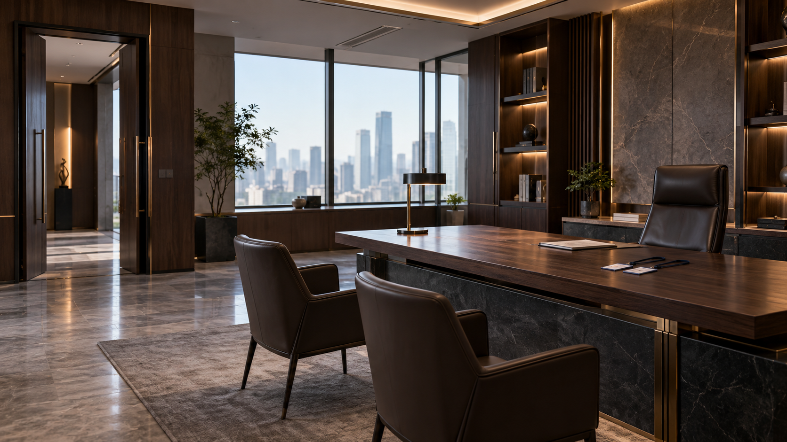

无常出差记 · EP01
四张环境图与两个后续镜头 · 第003批 · 待审核
首尔雨后街头环境 · 保存原图待用户确认场景设计与光影。
 中国地府姐妹住处环境 · 保存原图
中国地府姐妹住处环境 · 保存原图待用户确认场景设计与光影。
中韩阴间边境环境 · 保存原图待用户确认场景设计与光影。

严在玄办公室环境 · 保存原图待用户确认场景设计与光影。
白辞释放招魂铃后续镜头 · 保存原图待用户审核人物、服饰与动作。
黑棠核对令牌后续镜头 · 保存原图待用户审核人物、服饰与动作。 实际图为手持令牌；尚未实现原分镜指定的掌上悬浮动作。